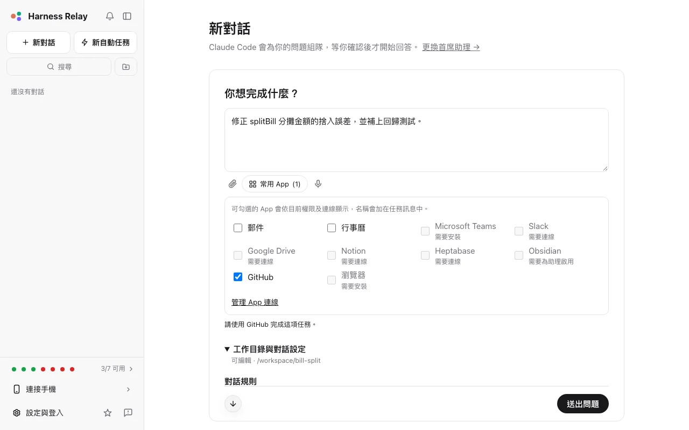
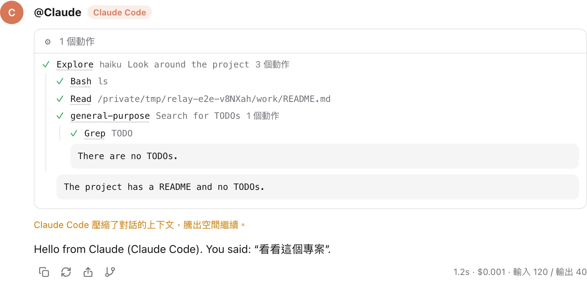
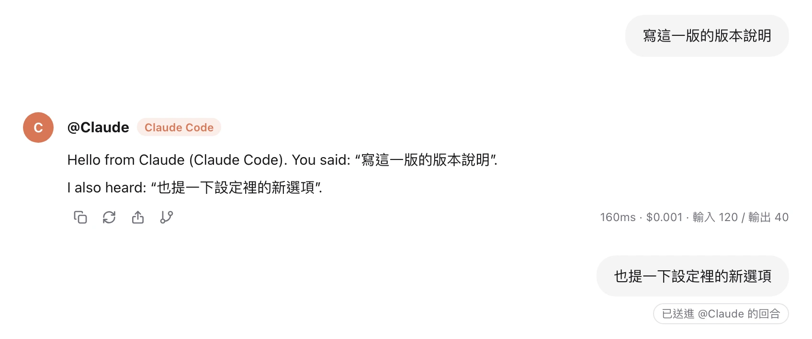
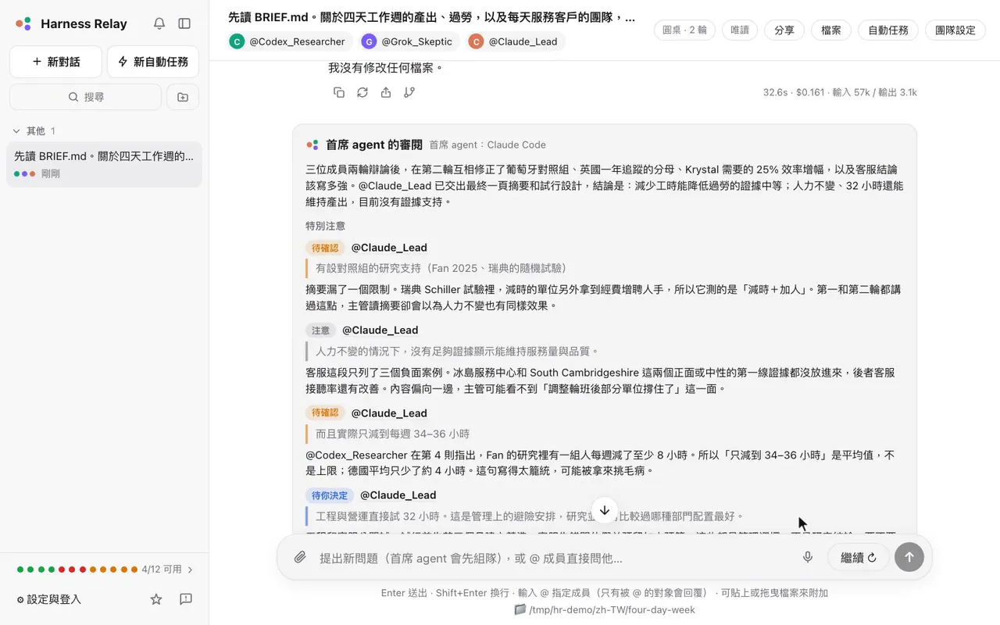

第一個對話
開一個對話、提出問題、確認團隊：agent 會在同一個對話裡回答，你隨時都可以加入討論。這一頁以一個問題為例，從頭到尾走一遍。
開一個新對話
觀看完整對話示範（MP4），看看首席 agent 如何為你的問題組隊，以及你追問後團隊如何接手。
在首頁選開始新對話，或在側邊欄選新對話，直接輸入第一個問題。展開工作目錄與對話設定可更換資料夾、權限或標題。前往設定更換首席助理 後，選返回新對話草稿可繼續使用這個視窗裡原有的問題與設定。
- 工作目錄：agent 工作的資料夾。輸入路徑後按 Enter、從清單挑一個用過的，或在執行 Harness Relay 的那台電腦的瀏覽器裡，用資料夾按鈕在系統自己的對話框裡選。最多可以加八個；agent 從第一個開始。資料夾還不存在時，Harness Relay 會問你要不要建立。
- 檔案權限：每個 agent 不必問你就能做的事：唯讀、可編輯、替我核准（可編輯，超出的動作由首席 agent 先放行它認為安全的）或完全存取。不確定的話，先用唯讀。各級權限允許什麼
- 權限範圍以外的動作：詢問我（在對話中問你，agent 會等你）或自動拒絕（agent 會被告知不行，改用其他方式）。選替我核准或完全存取時不會顯示。
- 在本次組隊後選等我確認團隊或直接開始回答。下一個新對話會記住這次的選擇。
- 團隊回答後，請首席 agent 審閱回覆 位於組隊確認選項下方，預設勾選。團隊回答完，首席 agent 會讀過回覆，指出該檢查的地方（見下方）。
輸入或口述問題後就能按送出問題，也可以附加檔案一起送給團隊。登入 Relay 後會在背景檢查 App 連線。按迴紋針前的常用 App（四個方格的圖示），勾選想請團隊使用的可用服務。無法勾選的 App 會在名稱下方說明原因。若 Slack 需要確認，按檢查 Slack 連線，讓 Codex 讀取你自己的 Slack 個人檔案。選取的名稱會和問題一起送出，每位助理依現有權限使用。需要連結服務時，按管理 App 連線，再按返回新對話草稿，原來的問題、附件與仍可使用的 App 都會保留。送出按鈕固定在表單框內的底部，點向下箭頭可查看更多設定。

提出問題
使用已連結的 App
想在第一次聊天時找文件，可按迴紋針前的常用 App（四個方格的圖示）。若 Google Drive 無法勾選，按管理 App 連線，在文件與筆記找到 Google Drive，展開 Drive 列，保留預設的搜尋與讀取用途，再按用 Google 登入。如果看到設定 Google 登入，請先依照Google OAuth 設定步驟完成登錄。在選擇助理以啟用工具勾選助理後，返回草稿並勾選 Google Drive，就可以請它依檔名找文件。若要寫入 Google 文件，請在 Drive 列找到已連結的 Google 帳號，按開啟文件新增與編輯。請已選好的助理起草一份文件，核對帳號、標題和內文，再按建立文件或捨棄。設定 Google 文件編輯
若要使用 Microsoft Teams，請在團隊通訊展開 Teams，依提示安裝 PowerShell 7，再用工作或學校帳號登入。讀取頻道訊息所需的 ChannelMessage.Read.All 權限必須由管理員同意；如果租用戶已授予 Microsoft Graph PowerShell 這項權限，就能沿用。選擇可讀取頻道的助理。若要發文，請另行開啟發送權限，並在 Relay 確認每一則草稿。設定 Microsoft Teams
若要使用 Slack，請在團隊通訊 → Slack開啟 Claude 或 Codex 的連結，回到 Relay 即可驗證該帳號，也可以按重新檢查連線。若要透過 Relay 發文，可開啟從 Relay 傳送訊息，再勾選可提議傳送訊息的助理。這些訊息會等你在 Relay 聊天按送出。透過代管連接器發文的權限則由 Claude 或 Codex 管理。連結 Slack
在郵件與行事曆展開郵件，從選擇郵件服務選 Gmail、iCloud 郵件、Outlook或其他信箱。若要連結行事曆，請展開行事曆，在選擇行事曆服務中選 Google Calendar、iCloud 行事曆、Outlook 或其他（CalDAV），即可看到所選服務的設定。若選 Gmail 或 Google Calendar，按用 Google 登入。若看到設定 Google 登入，請先在此設定共用的用戶端。各列的選擇助理以啟用工具可選擇使用的助理。每個 Google 或 Microsoft 帳號在已連結的信箱或已連結的行事曆各顯示一次，可在該處單獨移除一個信箱或行事曆。若要解除該帳號所有服務的連結，請到帳號登入設定（OAuth 2.0），在 Google 或 Microsoft 下找到該電子郵件地址。管理信箱與行事曆帳號
若想用本機筆記，在常用 App 的 Obsidian 按選擇筆記庫，之後可按加入筆記庫繼續加入。獲得授權的助理可存取所有已連結的筆記庫。請它把聊天中的一項決議整理成 Markdown 筆記，並指定要存入哪個筆記庫。檢閱筆記庫的完整路徑、庫內的筆記路徑與提議的內文，然後按建立筆記或捨棄。
若想請助理查看拉取請求，請在常用 App 的開發與瀏覽中連結 GitHub。若看到安裝 GitHub CLI，請按下按鈕，等畫面出現登入選項。分享對話和 GitHub 自動任務也使用同一個 GitHub CLI 帳號。管理或登出該帳號
撰寫提問
像問同事一樣寫下問題：你需要什麼、試過什麼，以及怎樣才算好的答案。按 Enter 送出，Shift+Enter 換行。在手機或平板上，Enter 是換行，按箭頭按鈕送出。
- 附加檔案：把截圖直接貼到輸入框、把檔案拖到輸入框上，或按迴紋針。每則訊息最多可以附 10 個檔案、每個 20 MB。讀到這則訊息的 agent 都打得開，圖片也看得到。
-
指定成員：輸入
@挑一位隊友。訊息裡 @ 了成員時，只有他們會回覆；沒有 @ 時，整個團隊都會參與。 - 用說的：按送出按鈕旁的麥克風按鈕，說完再按一次，文字就會出現在輸入框裡，讓你修改後再送出。語音在你的電腦上轉成文字，錄音不會上傳；第一次使用時，會有對話框說明要下載什麼。
確認團隊
在任何人回答之前，首席 agent 會先讀你的問題，在對話中放一張團隊設計卡片：它選的團隊（目前的團隊、你的某個範本、它調整過的範本，或全新的團隊）、為什麼，以及每位成員的角色。在你回應之前，側邊欄會把這個對話標為等你確認團隊。
- 確認團隊：團隊開始處理你的問題。
- 調整團隊：打開團隊設定，你可以自己改成員、角色或對話模式，也可以請首席 agent 改。在那裡儲存就等於確認團隊。
- 不採用，沿用目前的團隊：改由你原本的團隊回答。第一個問題不會出現這個選項。
- 存成範本：把首席 agent 設計或調整的團隊留下來，之後它就能直接選用。
卡片等你確認的期間，你寫的訊息會和問題一起交給團隊。只有新問題才會重新組隊：回答 agent 的提問、@ 了成員的訊息，以及繼續，都會交給目前的團隊。首席 agent 怎麼挑團隊
團隊工作時
回覆會一邊產生一邊顯示，對話標題下方的成員標籤會標出誰正在發言。agent 的步驟（讀檔、執行指令）和步驟之間的思考，會收在它名字下方的一列裡，例如 5 個動作 · 4 段思考；展開就能看到每一步，以及哪些失敗或被拒絕。每則回覆都會顯示花了多久，agent 有回報時也會顯示費用與 token 數。
agent 把一部分工作交給它自己的 subagent 時，subagent 的步驟會收在啟動它的那一步底下，標出它的名稱、模型與動作數；展開就能看到每一步和它回報的結果。agent 的 CLI 壓縮了上下文、重試請求或換了模型時，回覆裡會有一則說明。

- 插話：輸入框一直可以用。按 Enter，訊息會先放在輸入框上方的等待區，在下一位 agent 發言前送到。送到之前可以編輯或撤回；送到後會標上插話。
- 直接送進進行中的回合：在團隊設定打開團隊工作時，把訊息直接送進進行中的回合後，你的訊息會直接送進正在發言那位成員的回合（它的 agent 能接收時：Claude Code、Codex、Grok、Antigravity、Goose 與 Pi），並標上已送進…的回合；否則照上面的方式在等待區等待。
- 停止並改問這個：按 ⌘+Enter（Windows 與 Linux 為 Ctrl+Enter）會停止團隊，並立刻送出你的訊息。
- 停止會結束目前這次執行。還在等待的訊息會留在等待區，標示這些訊息還沒送出，可以送出、編輯或撤回。
- 繼續讓團隊不必等新訊息就接著做：再跑一組輪次，或再接力一次。接力達到交棒上限時特別好用。

沒有補充的 agent 會回 [PASS]，以淡色的沒有補充（PASS）顯示。agent 想做權限沒涵蓋的事時，它的回覆會出現核准卡片並等你決定：見核准。
agent 向你提問時
好答案取決於只有你知道的事（例如你的情況、目標或偏好）時，agent 會先問你，而不是亂猜。這時團隊會停下來：其他人不會發言，問題會標上等你回答，側邊欄也顯示等你回答。
直接在輸入框回覆。提問的 agent 會先帶著你的回答作答，接著團隊其他人繼續。想讓大家不等你的回答繼續做，按略過問題（或問題下方的略過，讓團隊繼續）。
首席 agent 的審閱
開著首席 agent 審閱時，團隊回答完，首席 agent 會讀過新的回覆，在後面加上一張首席 agent 的審閱卡片：
- 一段摘要，說明團隊做到哪裡。
- 特別注意：需要你留意的地方，各自標成風險、待你決定、意見分歧、待確認或注意，並引用它所指的成員原話。點成員的名字會跳到那段話，回覆本身也會把那段話標示出來。
- 建議的下一步，最重要的排在前面：只有你能做的事，以及團隊接下來可以做的事。按交給團隊，那一步的訊息就會放進輸入框，讓你修改或送出。

這一輪有團隊檢查結果時，卡片會先於審閱出現，首席 agent 也會讀到結果。
首席 agent 只讀不改：它不會修改任何檔案，agent 也看不到它的審閱。每次審閱都會多執行一次首席 agent 的 coding agent，審閱結束前對話會一直忙碌；這時送出訊息會停止審閱並立刻送出。要在某個對話關掉它，在團隊設定或最新的團隊設計卡片上，取消勾選團隊回答後，請首席 agent 審閱回覆。
小技巧：想試另一個方向又不想丟掉現在這個，可以從某則回覆分支對話：見對話。